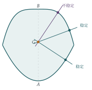

STEP III 2025，第 9 题
继续之前，请先阅读题目（原题为英文）。题目载于 OCR 提供下载的 2025 年 STEP 试卷（zip 文件）内的 STEP III 试卷： www.ocr.org.uk/Images/750486-2025-past-papers.zip
引子
把一个榄球放在桌上，它会侧躺着停下来；把它竖起来，只要十分小心，它也可以这样平衡，但轻轻一碰就会倒下。每一个放在桌上的刚体（rigid body）都有一组平衡位置（equilibrium positions），其中有些是稳定（stable）的，有些是不稳定（unstable）的，而哪些位置存在，只取决于它的形状和质心（centre of mass）。一个物体可以有多少个平衡位置？最少又可以有多少个？
这道题构造了一个立体，形状像陀螺，上半部是圆顶，下半部是尖底，并证明它除了可以正立或倒立之外，还可以在三个不同的倾斜角度上静止。关键思路是一个简单的几何条件：物体能以其表面上某一点着地而静止，当且仅当表面在该点的法线（normal）通过质心。这背后有一项近年的发现：一个称为 Gömböc 的凸（convex）形体，它只有一个稳定位置和一个不稳定位置。
动笔之前
一个立体放在桌上，只以其曲面上的一点 \(X\) 与桌面接触。作用于它的力是它的重量（作用于质心 \(G\)）和在 \(X\) 的反作用力（reaction）。这两个力何时平衡？
桌面在 \(X\) 与曲面相切，而反作用力作用于 \(X\)，并垂直于桌面，即沿着曲面的法线。重量则沿铅垂方向作用，并通过 \(G\)。两个力只有在沿同一直线作用时才能平衡，所以通过 \(X\) 的铅垂线，也就是在 \(X\) 的法线，必须通过 \(G\)。因此：物体能以 \(X\) 着地而静止，当且仅当在 \(X\) 的法线通过 \(G\)。
逐步解题
阶段 1 质心
把立体切成薄薄的圆柱壳（cylindrical shells），半径为 \(x\)，厚度为 \(\delta x\)，高度为 \(y\)。一个圆柱壳的体积是多少？它的质心在哪里？
由于 \(y = \frac{r^n - x^n}{r^{n-1}}\)，一个圆柱壳的体积是 \(2\pi xy\,\delta x\)，而它的质心在高度 \(\frac y2\) 处。所以 \[V = \int_0^r 2\pi xy\,\mathrm{d}x = \frac{2\pi}{r^{n-1}}\Bigl(\frac{r^{n+2}}{2} - \frac{r^{n+2}}{n + 2}\Bigr) = \frac{n\pi r^3}{n + 2},\] 而对底面的矩（moment）是 \[\begin{aligned} \int_0^r 2\pi x\cdot\frac{y^2}{2}\,\mathrm{d}x &= \frac{\pi}{r^{2n-2}}\int_0^r x(r^n - x^n)^2\,\mathrm{d}x \\ &= \pi r^4\Bigl(\frac12 - \frac{2}{n + 2} + \frac{1}{2n + 2}\Bigr) = \frac{n^2\pi r^4}{2(n + 1)(n + 2)}. \end{aligned}\] （括号可以化简，是因为 \((n + 1)(n + 2) - 4(n + 1) + (n + 2) = n^2\)。）两者相除，得 \[\bar y = \frac{nr}{2(n + 1)}. \qed\] 当 \(n = 2\)（抛物面，paraboloid）时，这是 \(\frac r3\)，正是大家熟悉的结果；当 \(n \to \infty\) 时，立体变成圆柱，而 \(\bar y \to \frac r2\)。
阶段 2 法线与轴相交之处
曲线在 \(x = rp\) 的斜率（gradient）是 \(-\frac{nx^{n-1}}{r^{n-1}} = -np^{n-1}\)，所以法线的斜率是 \(\frac{1}{np^{n-1}}\)。沿法线由 \(\bigl(rp, r(1 - p^n)\bigr)\) 走到 \(y\)-轴，\(x\) 减少了 \(rp\)，而 \(y\) 减少了 \(\frac{rp}{np^{n-1}} = \frac{r}{np^{n-2}}\)。所以 \[Y = r\Bigl(1 - p^n - \frac{1}{np^{n-2}}\Bigr). \qed\]
当 \(n = 4\) 时，\(Y = r\bigl(1 - p^4 - \frac{1}{4p^2}\bigr)\)。它在哪里取最大值？当 \(p \to 0\) 时，以及在 \(p = 1\) 时，情况如何？
\(\frac{\mathrm{d}Y}{\mathrm{d}p} = r\bigl(-4p^3 + \frac{1}{2p^3}\bigr) = 0\) 成立于 \(p^6 = \frac18\)，即 \(p^2 = \frac12\)。这时 \(Y = r\bigl(1 - \frac14 - \frac12\bigr) = \frac14r\)。■
当 \(p \to 0\) 时，\(Y \to -\infty\)（圆顶在顶部附近非常平坦，它的法线几乎是铅垂的，要在很低的地方才与轴相交）；在 \(p = 1\) 时，\(Y = -\frac14r\)。所以当 \(p\) 由 \(0\) 增至 \(1\) 时，\(Y\) 由 \(-\infty\) 上升至 \(\frac14r\)，再回落至 \(-\frac14r\)。
阶段 3 陀螺
第 (iii) 部分的立体，是一个圆顶（\(n = 4\)）叠在一个倒转的抛物面（\(n = 2\)）之上。它的质心在哪里？
由步骤 1，圆顶的体积是 \(\frac{2\pi r^3}{3}\)，质心在 \(\frac{2r}{5}\)；抛物面的体积是 \(\frac{\pi r^3}{2}\)，而由于它是倒转的，质心在 \(-\frac r3\)。所以 \[\bar y = \frac{\frac23\cdot\frac25 - \frac12\cdot\frac13}{\frac23 + \frac12}\,r = \frac{\frac{4}{15} - \frac16}{\frac76}\,r = \frac{3r}{35}.\] \(G\) 位于 \(\bigl(0, \frac{3r}{35}\bigr)\)，比最阔之处略高。
阶段 4 数算平衡位置
倾斜的平衡位置需要有一点（不是 \(A\) 或 \(B\)），其法线通过 \(G\)。在曲面的每一部分上，有多少个点的法线与轴相交于高度 \(\frac{3r}{35}\)？
圆顶。它的法线与轴相交的高度 \(Y\) 由 \(-\infty\) 上升至 \(\frac14r\)，再下降至 \(-\frac14r\)。由于 \(-\frac14r < \frac{3r}{35} < \frac14r\)，根据介值定理（intermediate value theorem），\(\frac{3r}{35}\) 这个值在上升的一段取得一次，在下降的一段也取得一次：共两点。
尖底。由第 (ii) 部分取 \(n = 2\)，再对 \(x\)-轴作反射，可知在参数为 \(p\) 的点上，法线与轴相交于 \(-r\bigl(1 - p^2 - \frac12\bigr) = r\bigl(p^2 - \frac12\bigr)\)，这个值由 \(-\frac12r\) 递增至 \(\frac12r\)。它恰好有一次等于 \(\frac{3r}{35}\)，就是在 \(p^2 = \frac{41}{70}\) 时。
这三点各给出一个平衡位置，而三条法线与轴所成的角各不相同，所以 \(\overrightarrow{AB}\) 与铅垂线成三个不同的非零角（图 11.8.1）。■

回顾
把物理条件化为几何。平衡变成了“法线通过 \(G\)”。
不用求解也能证明存在。我们从没有求出那些角。介值定理，加上函数 \(Y(p)\) 的形状，已说明了它们有多少个。
重用一般结果。第 (ii) 部分对一般的 \(n\) 所得的结果，一并处理了第 (iii) 部分中曲面的两个部分。
背后的数学
平衡位置即临界点
当立体以点 \(X\) 着地而静止时，\(G\) 离桌面的高度就是由 \(G\) 到在 \(X\) 的切平面（tangent plane）的距离；对凸体来说，当 \(GX\) 沿着法线时，这个距离就是 \(|GX|\)。一般而言，平衡位置就是由 \(G\) 到曲面的距离的临界点（critical points）：使 \(|GX|\) 取驻值的点 \(X\)，正好就是法线通过 \(G\) 的点。稳定的平衡位置是这个距离的局部极小值（\(G\) 尽可能低），而不稳定的则是局部极大值或鞍点（saddle points）。
沿着截面由 \(A\) 走到 \(B\)，与 \(G\) 的距离依次是：在 \(A\) 较大（极大值：以尖端平衡，不稳定），在尖底上的倾斜点较小（极小值，稳定），在边缘较大，在圆顶上较低的倾斜点较小（稳定），在较高的倾斜点较大（不稳定），而在 \(B\) 较小（稳定：以圆顶的顶部着地）。正如图中所示，极小值和极大值必定交替出现。（事实上还有一个题目没有计算在内的平衡位置：立体可以不稳定地平衡在它尖锐的边缘上，曲面在那里没有唯一的法线。）
Gömböc
一个凸体最少可以有多少个平衡位置？任何物体都至少有一个稳定位置和一个不稳定位置：就是曲面上离 \(G\) 最近和最远的点。密度均匀的二维凸形状总是至少有四个（距离的两个极小值和两个极大值，交替出现）。1995 年，阿诺尔德（Vladimir Arnold）提出一个问题：密度均匀的三维凸体，能否只有两个平衡位置，即一个稳定、一个不稳定？2006 年，Gábor Domokos 和 Péter Várkonyi 构造出这样的一个形体，就是 Gömböc：无论以甚么姿势把它放下，它都会滚动摇晃，直至到达它唯一的稳定位置为止。Domokos 后来留意到，有些陆龟的壳很接近这个形状，这有助牠们在被翻转后自行翻身。
对物体稳定性的研究可以追溯至阿基米德（Archimedes）。他在《论浮体》（On Floating Bodies）中，根据形状和密度，分析了一个浮着的抛物面（船身的一个模型）何时能稳定地直立，何时会翻侧。他只用几何便得出答案，当中涉及的正是本节所用的那种质心和法线的计算。造船工程师至今仍在运用他的想法，形式就是稳心（metacentre）：如果通过浮心（centre of buoyancy）的铅垂线与船的轴线的交点位于质心之上，船便是稳定的。
思维技巧
平衡位置是势能（potential energy）的驻点（stationary points），而稳定的平衡位置是它的极小值。与其把驻点逐一解出来，不如数算它们的数目。
这里的势能与 \(G\) 的高度成正比，也就是由 \(G\) 到曲面的距离。在大学里，这个观点贯穿力学、化学（分子会落入能量的极小值）和拓扑学；在拓扑学中，莫尔斯理论（Morse theory）说明，曲面上任何函数的极小值、极大值和鞍点的数目，都受曲面的形状所限制。
延伸练习
不倒翁玩具。试做 STEP II 1996，第 9 题：一个置于半球上的圆锥，何时会自行回正？（提示：相对于半球的球心，\(G\) 必须在哪里？）
球体。对于均匀实心球体，每一条法线都通过球心。这说明它的平衡位置有甚么特点？如果球体的质心稍为偏离球心，又会怎样？
椭圆。证明一块椭圆形圆盘在其自身所在的平面内沿一条直线滚动时，恰好有四个平衡位置，并指出哪些是稳定的。
两个抛物面。把第 (iii) 部分的圆顶换成抛物面 \(ry = r^2 - x^2\)，使立体对 \(x\)-轴对称。证明 \(G\) 位于原点，求出倾斜的平衡位置，并解释为何它们成对出现，且每对的倾斜角相等。
延伸阅读
Péter Várkonyi & Gábor Domokos, “Static equilibria of rigid bodies: dice, pebbles, and the Poincaré–Hopf theorem”, Journal of Nonlinear Science 16 (2006)。提出 Gömböc 的论文。
Daniel Kleppner & Robert Kolenkow, An Introduction to Mechanics（Cambridge University Press），论平衡与稳定性。
Chris Rorres, “Completing Book II of Archimedes’s On Floating Bodies”, Mathematical Intelligencer 26 (2004)。阿基米德的稳定性分析，配以现代图解。